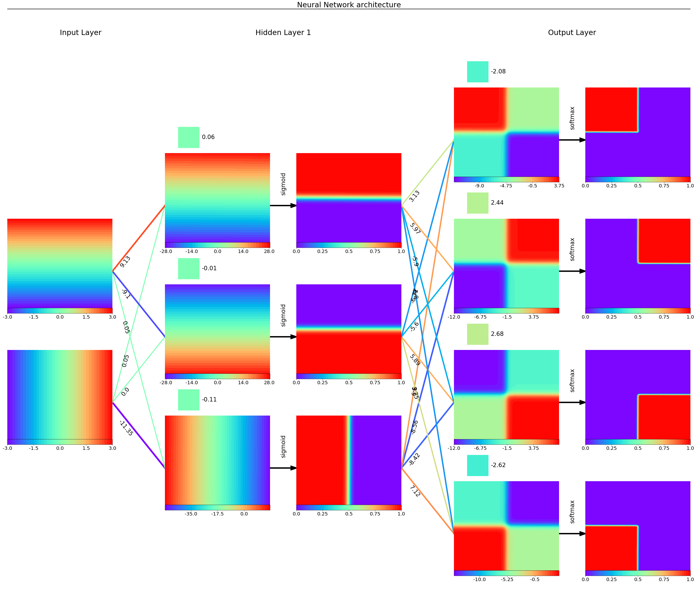
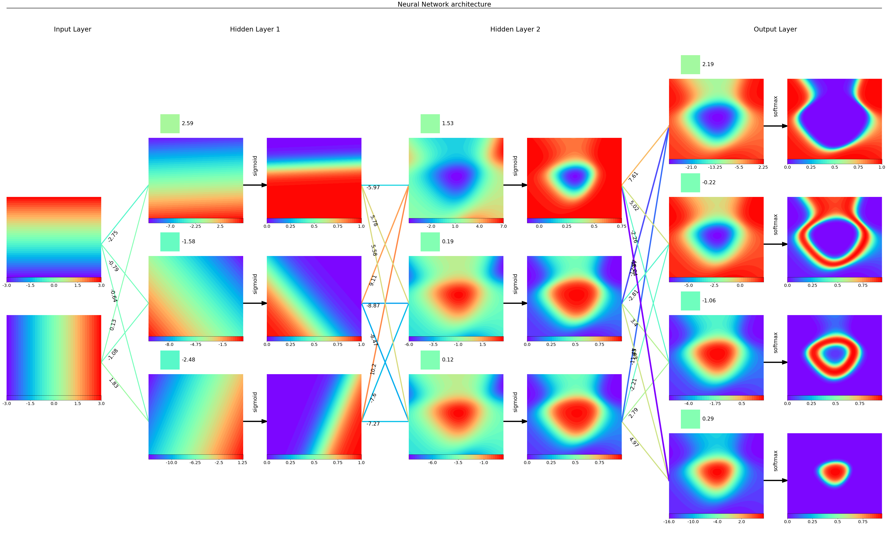
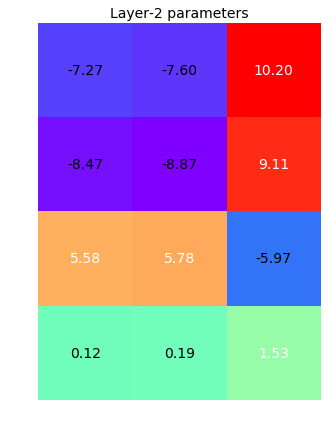
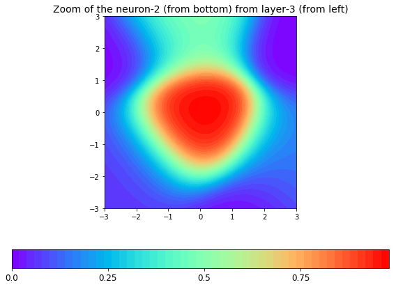

1. Introduction
Welcome back to the FCNN series!
In this new post, we are going to develop a Python class to visualize what happens inside a feed-forward neural network, which has been trained on toy examples with Tensorflow with the previously-developed Python class, trainFCNN().
The Python class, visFCNN(), takes as input the instance of the trainFCNN() class after the training process has happened, which contains all the information required to visualize the network flow, namely the values of the network parameters and main nodes (inputs, linear outputs and activation outputs).
This flow corresponds to a 2D batch of the whole input space, which will be transformed throughout each neuron till the final output, i.e. the model prediction. The structure of this post comes from the previous post to build the single-sample flow visualization.
This Python class also needs some initial settings (such as geometric parameters of the chart) and then it starts to draw a neuron and a bias term, a line that represents a linear layer weight, to assign the colours to any object, to draw the input layer, each hidden layer and the output layer.
In the next post, we will play a bit with the class to visualize different neural networks with different settings.
The source code can be found in my Github repo.
Check out also this interactive application developed by the Tensorflow team.
2. The visualization class in action
This post aims at illustrating and explaining how to build a Python class to visualize the transformation of the 2D space through the trained neural network.
An example of what the class looks like in action is given below, where the network has been trained on the multi-class quadrants classification problem.
vnn = visFCNN2D(tnn)
vnn.visualize(palette='rainbow')

Another example is the multi-class squares classification problem, where the network has got two hidden layers of 6 neurons each, and sigmoid as the activation function.
vnn = visFCNN2D(tnn)
vnn.visualize(palette='rainbow')

Since the network is larger and quite complex, we exploit the zoom feature to dig deeper on the parameters’ values and the space of any of the neurons.
vnn.zoom(what='parameters', level=[1], palette='rainbow')

vnn.zoom(what='activations', level=[2, 1], palette='rainbow')

3. Building the visualization class visFCNN
3.1 Initialization
This section aims at initializing the class with the network data and the geometric parameters.
We describe how to create the visualization class as a sequence of function-definition steps, rather than give the entire code into a single block that doesn’t help very much.
To this end, we use classmethod to assign a function to a class method.
class visFCNN2D(object):
pass
We start by setting the geometric parameters that define the network chart layout.
Every geometric parameter has been explained in the series intro.
We use a more compact way to assign multiple parameters to the class as a dictionary with the __dict__ method.
def init_class(self, tnn):
self.__dict__ = {'weight_size': 3, 'activation_size': 1.5, 'vert_mrg': 1.5,\
'neuron_size': 6, 'bias_size': 1.5, 'title_size': 3,\
'fsS': 20, 'fsM': 24, 'fsL': 30,}
self.layerDist = self.weight_size+self.activation_size+2*self.neuron_size
self.neurShift = self.vert_mrg+self.neuron_size
self.dataRetrieval(tnn)
visFCNN2D.__init__ = classmethod(init_class)
We get the data from the trained network via the tnn object.
Parameters and variables are stored in nn_prms and nn_vars2D, respectively.
We treat the input as the output of a fictitious previous activation layer.
The set of activation layers, $a^{(kk)}$, is retrieved from tnn.nn_vars[1::2], while the set of dense layers, $z^{(kk)}$, is retrieved from tnn.nn_vars[::2].
In a similar fashion, we extract weights and biases from tnn.nn_prms.
The layout of the network is given by the number of layers, the number of neurons in each layer, the maximum number of neurons that defines the figure height. For better visualization of the parameters’ intensity, we extract the maximum value for each of those objects, so that data (and therefore colours) can be normalized.
def dataRetrieval(self, tnn):
self.__dict__.update({'actFun': tnn.activation, 'lastActFun': tnn.lastActFun,\
'activations': [tnn.XXgrd] + tnn.nn_vars2D[1::2],\
'linNeurons': tnn.nn_vars2D[::2], 'weights': tnn.nn_prms[::2],\
'biases': tnn.nn_prms[1::2], 'neurGrid': [tnn.Xgrd1, tnn.Xgrd2],})
self.layers = zip(self.linNeurons, self.activations[1:], self.weights, self.biases)
self.Nlayers = len(self.activations)-1 # no input layer
self.Dlayers = [aa.shape[-1] for aa in self.activations]
Nneuron_max = max(self.Dlayers)
self.bottomMargin = lambda Nneurons: (self.vert_mrg+self.neuron_size) * (Nneuron_max-Nneurons)/2
maxVal = lambda xxs: max(np.max(np.abs(xx)) for xx in xxs)
self.prm_max = max(maxVal(self.weights), maxVal(self.biases))
self.nn_height = Nneuron_max*(self.vert_mrg+self.neuron_size)
self.height = self.nn_height+self.title_size
self.width = self.neuron_size+self.Nlayers*self.layerDist
visFCNN2D.dataRetrieval = classmethod(dataRetrieval)
3.2 Draw a neuron
We draw a dedicated plt.axes() object from Matplotlib for each neuron, i.e., any variable in the network, namely inputs x, affine transformation outputs z and activation outputs a.
The first step of the code calculates the coordinates and size of the axes with the axisLocNorm function, which normalize them to the figure size.
The second step is to draw a contour plot of the neuron intensity array, get rid of the axis, define a 5-bin colorbar, place it horizontally to the bottom of the chart and write the bin values.
def axisLocNorm(self, xx, yy, ww, hh):
return (np.r_[xx, yy, ww, hh]/np.r_[self.width, self.height, self.width, self.height]).tolist()
def drawNeuron(self, xx, yy, intensity):
rax = plt.axes(self.axisLocNorm(xx, yy, self.neuron_size, self.neuron_size))
xgrid, ygrid = self.neurGrid
intensity = intensity.reshape(xgrid.shape)
cmap = 'binary' if self.palette=='2cols' else self.palette
cs = plt.contourf(xgrid, ygrid, intensity, 50, cmap=cm.get_cmap(cmap))
rax.axis('off')
cb_min, cb_max = np.min(intensity), np.max(intensity)
cbLabels = np.linspace(np.floor(cb_min), np.ceil(cb_max), num=5, endpoint=True)
cbar = plt.gcf().colorbar(cs, orientation='horizontal', pad=0)
cbar.set_ticks(cbLabels)
cbar.set_ticklabels(cbLabels)
cbar.ax.tick_params(labelsize=self.fsS)
visFCNN2D.drawNeuron = classmethod(drawNeuron)
visFCNN2D.axisLocNorm = classmethod(axisLocNorm)
3.3 Draw a bias
We draw a dedicated axes for each bias, on top of any linear-neuron axes.
Within this axes, the bias is represented as a rectangle with the built-in plt.Rectangle object from Matplotlib.
The rectangle plt.Rectangle needs the left-bottom-most coordinates, width and height as attributes.
The colour is defined within the patchColor function we will soon analyze.
The geometric object neuron is then added to the current axis gca() with add_patch, we clear the axis, add its value as text at the right-hand side of the object in black.
def drawBias(self, xx, yy, intensity, maxVal):
rax = plt.axes(self.axisLocNorm(xx, yy, self.neuron_size, self.bias_size))
neurCol = self.patchColor(intensity/maxVal)
biasBox = .8*self.bias_size
neuron = plt.Rectangle((self.bias_size/2, self.bias_size-biasBox), biasBox, biasBox, color=neurCol)
plt.xlim([0, self.neuron_size])
plt.ylim([0, self.bias_size])
plt.gca().add_patch(neuron)
rax.axis('off')
plt.text(self.bias_size+biasBox/2, self.bias_size-biasBox/2, '{:.2f}'.format(intensity),\
fontsize=self.fsM, va='center', ha='left', color='k')
visFCNN2D.drawBias = classmethod(drawBias)
3.4 Draw weights’ lines
We draw a line line for each weight connecting a neuron of one layer to a neuron of the next layer.
The first argument to the plt.Line2D() is the list of two x-coordinates, while the second one contains the y-coordinates.
Colour is defined as a function of weight intensity with the patchColor method, as well as the line width.
The line width is 1 for a 0 weight and it increases as a square function of the intensity.
The geometric line line is then added to the current axis gca() with add_line.
Some text is added at the centre of the object to report the corresponding weight value. Colour is set to white. The challenge here is to orientate the text along the weight line direction, for the sake of readability.
We get the angle (in degrees) of the weight line from the connected neurons’ coordinates by means of a basic trigonometry rule:
$$ \alpha = \arctan\big(\frac{\Delta y}{\Delta x}\big)\cdot\frac{180}{\pi} $$
where $\Delta y = y_L - y_R$ is the vertical distance between the LHS and RHS neurons.
You easily guess what $\Delta x = x_L - x_R$ might be.
Its value is fed to the rotation attribute.
The text location is shifted by 25% of the line length along its direction, from the left-side neuron.
def drawLine(self, pL, pR, intensity, maxVal):
neurCol = self.patchColor(intensity/maxVal)
line = plt.Line2D(pL, pR, color=neurCol, linewidth=4+np.abs(intensity/maxVal)*3)
plt.gca().add_line(line)
plt.xlim([0, self.weight_size])
plt.ylim([0, self.nn_height])
scaling = .25
dx, dy = np.diff(pL), np.diff(pR)
alpha = np.arctan(dy/dx)*180/np.pi
xText = pL[0]+dx*scaling
yText = pR[0]+dy*scaling
plt.text(xText[0], yText[0], str(round(intensity, 2)), rotation=alpha[0],\
fontsize = self.fsM, va='top', ha='center')
visFCNN2D.drawLine = classmethod(drawLine)
3.5 Draw activation arrows
We use the arrow method to represent the activation function by connecting the linear output $z_j$ to the activation output $a_j$.
The arrow text tells which activation function has been used. In general, the function used in a hidden layer can differ from the one used in the output layer.
def drawArrow(self, kk):
rax = plt.axes(self.axisLocNorm(self.xx, 0, self.activation_size, self.nn_height))
for jj in range(self.Dlayer):
yy = self.y_bottom + jj*(self.vert_mrg+self.neuron_size)
plt.arrow(0, yy+self.neuron_size/2, self.activation_size, 0,
length_includes_head=True, head_width=0.2, fc='k', ec='k', lw=5)
actFunName = self.actFun if kk<self.Nlayers-1 else self.lastActFun
plt.text(self.activation_size/2, yy+self.neuron_size*.6, actFunName,\
fontsize=self.fsM, va='bottom', ha='center', color='k', rotation=90)
plt.xlim([0, self.activation_size])
plt.ylim([0, self.nn_height])
rax.axis('off')
visFCNN2D.drawArrow = classmethod(drawArrow)
3.6 Patch and line colours
We assign colours to each component according to the palette attribute, which is one of the palette names that can be found in the main docu.
The function is quite compact.
However, if you want to have more details about the colormap attribute, please visit the relative section of this post.
def patchColor(self, intensity):
#
smap = cm.ScalarMappable(norm=mColNorm(vmin=-1, vmax=1), cmap=cm.get_cmap(self.palette))
neurCol = tuple(smap.to_rgba([intensity]).reshape(-1)[:3])
return neurCol
visFCNN2D.patchColor = classmethod(patchColor)
3.7 Input layer
We draw a neuron for each input.
The x-coordinate does not change, but the y-coordinate does. Each next input is upshifted by neurShift, which is the sum of the vertical margin and the neuron axes size.
The first neuron starts from x=0 and y set to the bottomMargin.
See the introduction section that helps visualize it with some schemes.
def inputLayer(self,):
xx = kk = 0
for jj in range(self.Dlayers[0]):
self.y_bottom = self.bottomMargin(self.Dlayers[0])
yy = self.y_bottom + jj*(self.neurShift)
self.drawNeuron(xx, yy, self.activations[0][:, jj])
self.y_bottom_prev = self.y_bottom
visFCNN2D.inputLayer = classmethod(inputLayer)
3.8 Draw the weights
At layer kk we draw in a dedicated axes as many lines as the product of the number of neurons on each side, i.e., Din is the input dimension, the number of neurons and Dout is the output dimension, extracted from the weights shape.
The horizontal offset is given by weight_size, while the vertical one by neurShift.
The initial vertical offset changes from one layer (y_bottom_prev) to the next (y_bottom) according to the number of layer neurons.
def drawWeights(self, weights, kk):
self.y_bottom = self.bottomMargin(self.Dlayer)
xx = kk*self.layerDist + self.neuron_size
rax = plt.axes(self.axisLocNorm(xx, 0, self.weight_size, self.nn_height))
Din, Dout = weights.shape
xL, xR = 0, self.weight_size
for kL in range(Din):
for kR in range(Dout):
yL = self.y_bottom_prev + (kL)*self.neurShift+self.neuron_size/2
yR = self.y_bottom + (kR)*self.neurShift+self.neuron_size/2
self.drawLine((xL, xR), (yL, yR), weights[kL, kR], self.prm_max)
rax.axis('off')
self.xx = xx
visFCNN2D.drawWeights = classmethod(drawWeights)
3.9 Draw linear outputs z and biases
At layer kk we draw a neuron axes for each linear output z contained in linNeurons and a bias axes for each term in biases.
def drawBiasesLinOutputs(self, linNeurons, biases):
self.xx += self.weight_size
for jj in range(self.Dlayer):
yy = self.y_bottom + jj*(self.vert_mrg+self.neuron_size)
self.drawNeuron(self.xx, yy, linNeurons[:, jj])
self.drawBias(self.xx, yy+self.neuron_size, biases[jj], self.prm_max)
visFCNN2D.drawBiasesLinOutputs = classmethod(drawBiasesLinOutputs)
3.10 Draw activation outputs a
We use the arrow axes and the neuron axes for each activation output a contained in activations.
def drawActivation(self, activations, kk):
self.xx += self.neuron_size
self.drawArrow(kk)
self.xx += self.activation_size
for jj in range(self.Dlayer):
yy = self.y_bottom + jj*(self.vert_mrg+self.neuron_size)
self.drawNeuron(self.xx, yy, activations[:, jj])
self.y_bottom_prev = self.y_bottom
visFCNN2D.drawActivation = classmethod(drawActivation)
3.11 Title and layers’ description
On top of the network flow layout, we place the layer title from the input layer to any hidden layer to the output layer.
def titles(self,):
# title and axis ratio
rax = plt.axes(self.axisLocNorm(0, self.nn_height, self.width, self.title_size))
plt.text(self.neuron_size/2, self.title_size/2, 'Input Layer', fontsize = self.fsL)
for kk in range(self.Nlayers):
xx = kk*self.layerDist + self.neuron_size*2 + self.weight_size+self.activation_size/2
layerTitle = 'Hidden Layer ' + str(kk+1) if kk<self.Nlayers-1 else 'Output Layer'
plt.text(xx, self.title_size/2, layerTitle, fontsize = self.fsL, ha='center')
plt.xlim([0, self.width])
plt.ylim([0, self.title_size])
titleLine = plt.Line2D([0, self.width], [self.title_size]*2, color='k', linewidth=4)
plt.gca().add_line(titleLine)
plt.title('Neural Network architecture', fontsize=self.fsL)
rax.axis('off')
visFCNN2D.titles = classmethod(titles)
3.12 Visualize the whole network
The main function, visualize, groups the whole process, from retrieving a sample of the dataset with dataRetrieval() to creating the input, hidden and output layers.
The title of the network is created at the end.
def visualize(self, palette='Blues'):
self.palette = palette
plt.figure(figsize=(self.width, self.height))
# input layer
self.inputLayer()
# hidden and output layers
for kk, layer in enumerate(self.layers):
self.Dlayer = self.Dlayers[kk+1]
linNeurons, activations, weights, biases = layer
self.drawWeights(weights, kk)
self.drawBiasesLinOutputs(linNeurons, biases)
self.drawActivation(activations, kk)
# title
self.titles()
plt.show()
visFCNN2D.visualize = classmethod(visualize)
3.13 Zooming into a component of the network
The second main function, zoom, let us inspect what is happening in a single neuron or a single weights’ layer.
The what attribute can assume any of the three values:
linNeurons: the output of a linear transformation,activations: the output of the activation function,parameters: a stack of weights and biases of a layer.
The level attribute defines which neuron or parameters’ layer to zoom.
For the linNeurons and activations cases, this attribute requires a list of two values, where the former specifies the layer position from the left and the latter the neuron index from the bottom.
In other words, level=[0, 1] selects the top neuron from the first hidden layer.
Please consider that the input layer is stacked as the first element of the activations layer.
The code for the linNeurons and activations cases is what is used to draw a neuron, with some changes related to the axis, the colorbar padding and the title.
The code for the parameters is a matrix image of the parameter stack.
Each parameter value is written in the corresponding cell with either a black k or white w text, for the sake of readability, according to whether this value is less or greater than the mean value of the whole parameter range.
To prevent the library to squeeze our geometric shapes by using different scales for the two axes, we need to set equal scaling (i.e., make circles circular) by changing the dimensions of the plot box, as plt.axis('scaled').
def zoom(self, what='linNeurons', level=[0, 0], palette='Blues'):
plt.figure(figsize=(8, 6))
if what in ['linNeurons', 'activations']:
# data
intensity = getattr(self, what)[level[0]][:, level[-1]]
xgrid, ygrid = self.neurGrid
intensity = intensity.reshape(xgrid.shape)
neur_x, neur_y = level
# vis
cs = plt.contourf(xgrid, ygrid, intensity, 50, cmap=cm.get_cmap(palette))
#rax.axis('off')
cb_min, cb_max = np.min(intensity), np.max(intensity)
cbLabels = np.linspace(np.floor(cb_min), np.ceil(cb_max), num=5, endpoint=True)
cbar = plt.colorbar(cs, orientation='horizontal', pad=0.15)
cbar.set_ticks(cbLabels)
cbar.set_ticklabels(cbLabels)
cbar.ax.tick_params(labelsize=12)
ttlTxt = 'Zoom of the neuron-' + str(neur_y+1)+' (from bottom) from layer-'+str(neur_x+1)+' (from left)'
elif what == 'parameters':
# data
neur_x = level[0]
WW = self.weights[neur_x]
bb = self.biases[neur_x]
prm = np.vstack((WW, bb))
# vis
plt.imshow(prm, cmap=palette)
width, height = prm.shape
textColThreshold = (prm.max() + prm.min())/2
for x in range(width):
for y in range(self.biases):
val = prm[x,y]
txtCol = 'k' if val<textColThreshold else 'w'
plt.annotate('{:.2f}'.format(val), xy=(y, x), ha='center', va='center',\
color=txtCol, fontsize=14)
plt.axis('off')
ttlTxt = 'Layer-'+str(neur_x+1)+' parameters'
else:
ttlTxt = ''
print('zoom function available for linNeurons, activations or parameters options only.\
Please change the what attribute!')
plt.title(ttlTxt, size = 14)
plt.axis('scaled')
plt.tight_layout()
plt.show();
visFCNN2D.zoom = classmethod(zoom)